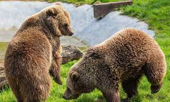

Bears
- Ollie
- Mona
Bears are big, strong and fast!
More facts about Bears!
This page will inform you of the many zoo animals we have
As well as their names, random facts, a picture of them and a link provided for more facts.
Bears are big, strong and fast!
More facts about Bears!
Well known for their long necks,
These gentle giants are the worlds’s tallest living land animals.
More facts about Giraffes!
An adult male’s roar can be heard up to 8km away.
More facts about Lions!
The Barbary Macaque is Europe’s Only Monkey
More facts about Monkeys!
An average male American alligator is 10 to 15 feet (three to five meters) long.
More facts about Alligators!